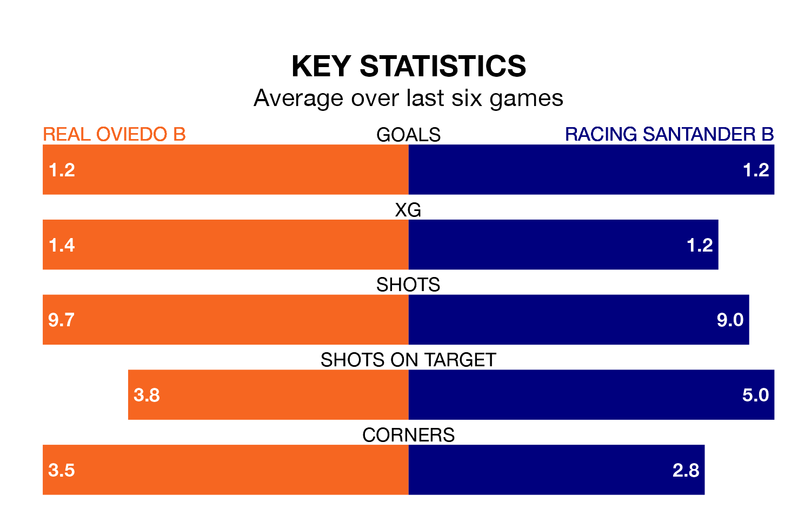

Racing Santander B travel to the Estadio El Requexón looking to secure a first win in seven Segunda División RFEF Group 1 games against Real Oviedo B on Sunday.
Racing Santander B have lost three and drawn three matches since they last earned three points – against Gimnástica Torrelavega on February 3.
They face an Oviedo B side who have won three and drawn one over that time.
With 38 goals in 27 games so far this season, Racing Santander B are the league's third-highest scorers with 1.4 goals per game. But they are conceding more than average too, letting in 33 goals at a rate of 1.2 per game.
Oviedo B, meanwhile, are below average scorers, with 0.9 goals per game, compared to a league average of 1.1. They have conceded 1.2 goals per game.
The hosts are 15th in the table after 27 games, of which they have won six and drawn 11, earning 29 points.
The away team are eight places ahead of Oviedo B in seventh, with nine wins and 10 draws putting them on 37 points.
In the last three years, Oviedo B and Racing Santander B have played each other on three occasions. Oviedo B won two of them and Racing Santander B one.
Their last meeting was on November 12, when Racing Santander B won 5-1 at home.
Oviedo B's last match was on Sunday, a 2-0 loss against Real Avilés.
Racing Santander B drew 2-2 with Pontevedra CF last time out, also on Sunday, with Álvaro Santamaría Arenas on the scoresheet.
Updated: 10:19 (UTC), 22/03/24